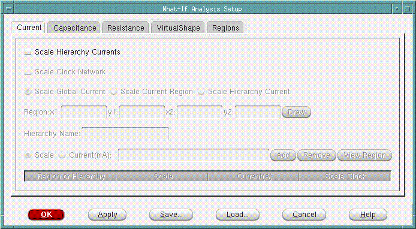
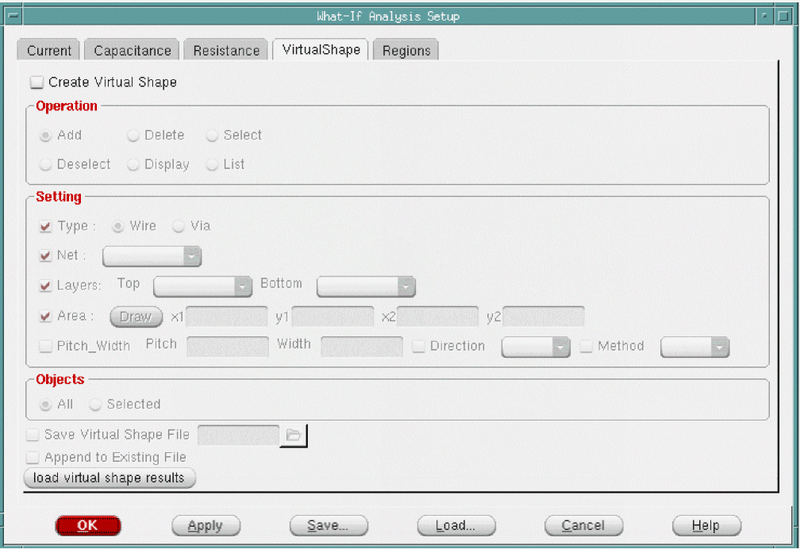
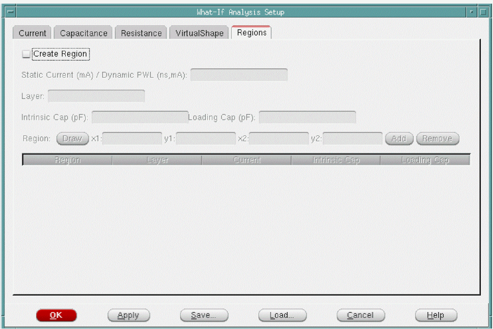
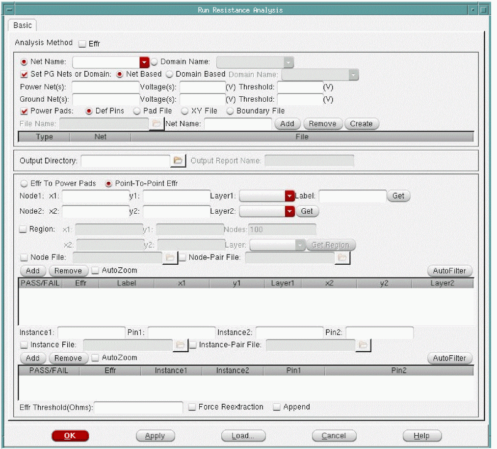
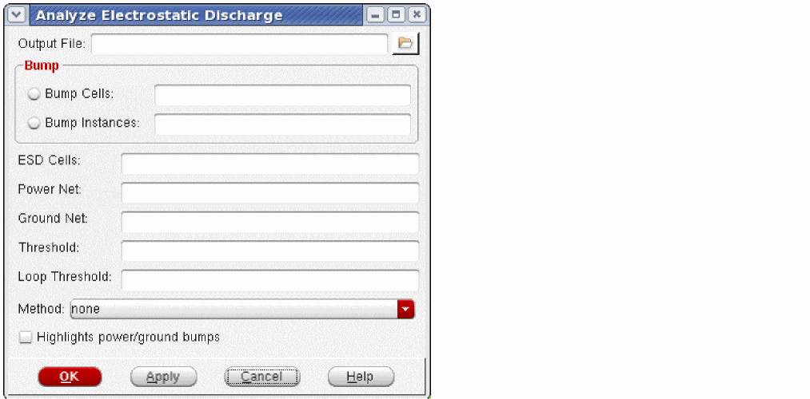
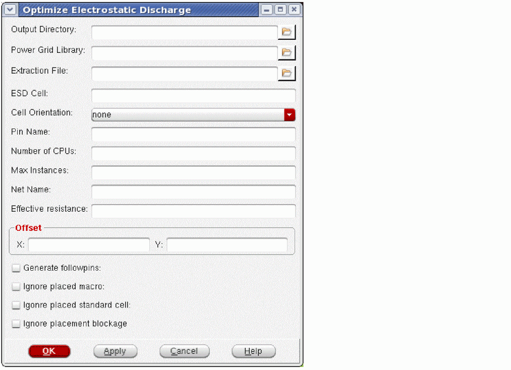

What-If Analysis Setup
- What-If Analysis Setup - Current
- What-If Analysis Setup - Capacitance
- What-If Analysis Setup - Resistance
- What-If Analysis Setup - Virtual Shape
- What-If Analysis Setup - Regions
What-If Analysis Setup - Current
Use this form to scale current to do what-if analysis for a hierarchical partition and assess its effect on IR drop.

Fields and Options
Related Topics
See command in chapter in the Text Command Reference.
What-If Analysis Setup - Capacitance
Use this form to scale the intrinsic cell capacitance value to determine how much additional capacitance can be added in a region to reduce dynamic IR drop.

Fields and Options
Related Topics
See command in chapter in the Text Command Reference.
What-If Analysis Setup - Resistance
Use this form to scale resistance globally or in a region to determine how much resistance can be modified in a region to reduce the entire IR drop.

Fields and Options
Related Topics
See command in chapter in the Text Command Reference.
What-If Analysis Setup - Virtual Shape
Use this form to add, select, deselect, delete, list, and display the what-if wires/vias to a design.
-
Choose Power & Rail > Run Rail Analysis > Advanced form, click on the What-If Analysis - Setup button > Virtual Shape tab.

Fields and Options
Related Topics
See create_what_if_shape command in the Rail Analysis Commands chapter in the Innovus Text Command Reference.
What-If Analysis Setup - Regions
Use this form to specify static or dynamic current regions on global power-grids over the placed macro to accurately capture high and low current consuming regions during rail analysis.

Fields and Options
|
Static Current: Specifies a single current value in mAmp. Dynamic PWL: Specifies a PWL current waveform in time (in ns) and current (in mA) format. For example, 0ns 0mA 0.5ns 1mA 1ns 2mA 3ns 1mA 4ns 0. |
|
|
Specifies a layer name on which the scaling will be performed. |
|
|
Specifies the cell intrinsic capacitance in pico farads (pf). This is required option when set in the dynamic mode (set_rail_analysis_mode |
|
|
Specifies the cell loading capacitance in pico farads (pf). This is required option when set in the dynamic mode (set_rail_analysis_mode |
|
|
Specifies the region on the layer across which the specified current and capacitance (in dynamic mode) is distributed by the rail analysis engine. |
Related Topics
See command in chapter in the Text Command Reference.
Run Resistance Analysis - Basic
Performs effective resistance calculation for all instances in a design. Effective resistance computes effective resistance between two nodes on the power-grid, or from a node to all the voltage sources in the design, or from an instance to all the voltage sources in the design.

Fields and Options
|
Net Based - is equivalent to the set_pg_nets command. Domain Based - is equivalent to the set_rail_analysis_domain command. If you have used Tcl command in your scripts, you do not have to use these GUI fields to set PG nets or rail analysis power domain. |
|
|
Specifies names of the power nets for which resistance analysis will be performed. |
|
|
Specifies names of the ground nets for which resistance analysis will be performed. |
|
|
|
|
The name of the power file containing the locations of the power rail voltage sources (VDD, VSS). You can automatically generate this file by clicking the Create button. The Edit Pad Location form appears. |
|
|
The name of the power net. The Add button adds the net to the list. The Remove button removes the net from the list. |
|
|
Specifies the name of the directory in which the output report file is saved. |
|
|
Specifies the name of the output report file that contains the report header and the sorted list for resistance values. |
|
|
Specifies to check effective resistance of a node to the voltage sources or power pads. This option is enabled only when Power Pads is selected. When this option is selected, Node2 and Instance2 options are disabled. |
|
|
Specifies to check effective resistance between two nodes on the power-grid. When this option is selected, Node2 and Instance2 options are enabled. |
|
|
Specifies the list of user-defined nodes for effective resistance calculation between the specified user-defined node and all voltage sources, or between two nodes on the power-grid. This option is enabled for both Effr To Power Pads and Point-To-Point Effr. You can add a list of nodes based on the region on a given layer. |
|
|
Specifies the second node for effective resistance calculation between two nodes on the power-grid. This option is enabled only for Point-To-Point Effr. |
|
|
Analyzes resistance in the specified region. You can draw a box on a specific layer, and specify the number of nodes to be selected (maximum limit of 100 nodes). This field allows you to compute effective resistance on a given layer across the chip and determine how the resistance is changing for the design from top to bottom layer. You can assign a name for the region. |
|
|
Specifies the name of the node list file. This file contains the list of user-defined nodes in the same format as mentioned for the |
|
|
Specifies the name of the node pair list file. This file contains the node pair list in the same format as mentioned for the |
|
|
Specifies the list of instances for which effective resistance is to be calculated. This option is enabled for both Effr To Power Pads and Point-To-Point Effr. |
|
|
Optionally, you can specify instance pin name. By default, the tool will use the instance pin associated with the net being analyzed. Pin name can be used in special cases when two different pins of an instance are connected to the same net. |
|
|
Specifies the second instance to enable effective resistance calculation between two instances in the design. This option is enabled only for Point-To-Point Effr. |
|
|
Specifies the name of the instance list file. This file contains the list of instances in the same format as mentioned for the |
|
|
Specifies the name of the instance pair list file. This file contains the instance pair list in the same format as mentioned for the |
|
|
Specifies the minimum allowed effective resistance to display node/node-pair/instance/instance-pair that have a resistance value above this threshold value. |
|
|
When you select Append and click the Load button, the content of the effective resistance analysis result file is appended to the previous list in the node/instance list box. If Append is not selected, the previous list is cleared. |
|
|
Adds the specified node/node-pair/instance/instance-pair to the list box. |
|
|
Removes the selected node/node-pair/instance/instance-pair to the list box. |
|
|
Specifies to automatically zoom in to the selected node/instance in the list box. |
|
|
Specifies to show the nodes or instances with eight color filter. When you specify Effr Threshold (Ohms) and click AutoFilter, the layout displays the nodes or instances with eight color filter. When you change the threshold value, you will get different plots on the layout. |
Analyze ESD
Use the Analyze Electrostatic Discharge form to report an effective resistance from the power or ground bump to the nearest ESD cell.

Fields and Options
Optimize ESD
Use the Optimize Electrostatic Discharge form to perform ESD cell optimization that enables you to determine optimal number and location of ESD cells given a set of bump locations in the design.

Fields and Options
Report
The Report section contains the following items:
- Library Cell Viewer form
- Power and Rail Plots form
- Power Library Report form
- Power Report form
- Power Histograms form
- Dynamic Movies form
- Dynamic Waveforms form
Cell Viewer
The Cell Viewer provides an artwork window for viewing the following objects:
- any LEF library cell
- any OpenAccess database cell view
- abstract view of any partition in the design
- power grid library cell
The Cell Viewer displays the content from the library database. It provides a convenient way to view the content of a cell, cell view or partition without having to zoom into the design. You can access this form without loading a design.
The Cell Viewer has the following tabs:
Cell Viewer - LEF
Use the LEF page to view the details of library cells using the information in the LEF file. You can navigate to a cell using the Library Browser, which is in the left side of the Cell Viewer. The details of the cell are displayed in the Display Area, which is in the right side of the Cell Viewer.
Cell Viewer - OA
Use the OA page to view the details of OpenAccess cells using the information in the OA library.

You can view an OA cell in two modes:
OA-Layout View

OA-Abstract View

Cell Viewer - Ptn
Use the Ptn page to display the abstract of any partition in the design. You can navigate to a partition through the Library Browser in the left side of the Cell Viewer.
Cell Viewer - PGV
Use the PGV page to view and debug power-grid libraries. To load multiple libraries, select Open Power Grid Library from the File menu.
You can navigate to a cell using the Library Browser, which is in the left side of the Cell Viewer. The details of the cell are displayed in the Display Area, which is in the right side of the Cell Viewer. You can expand a cell to view the default views corresponding to each PGV type (Tech, Early, EM, and IR).

This form allows you to take a physical layout and overlay it with a power-grid resistor network extracted by Power-Grid Library Generator.
Fields and Options
PGV Cell Views
You can click the + button to expand a cell and view the default cell views. Each view has a check box for displaying the content specific to the selected view. You can view either one or multiple views overlapped over each other.
The default views for different power-grid view types are:
- Tech Displays the basic port information of a cell.
- Early Geometrical View - displays the LEF of a cell. The types of geometrical views are: PORT_GEOM, OBS_GEOM, PROMOTED_GEOM and OPTIMIZED_GEOM views. Port View - displays more accurate port and tap information of a cell when . This information is available in the PORT_POWER view of the library. Capacitance Views - displays the grid and device capacitance information of a cell. The types of capacitance views are: GRID_CAP and DEVICE_CAP views. These views are net specific.
- EM Detailed View - displays the detailed power-grid information for all nets. This information is available in the DETAILED_POWER view of the library. Tap Current View - displays tap information of a cell. All the tap currents are shown in the viewer drawn in 8 colors for 8 linear filters according to the min max value. This information is available in the TAP_CURRENT view of the library. Dynamic Tap Current View - displays dynamic tap currents for each interval. The total current plot is net based, and supports multiple trigger view in a single PGV. This information is available in the DYN_TAP_CURRENT view of the library. Powergate View - displays the power switch information of a power-gate cell. This information is available in the POWERGATE view of the library.
- IR Collapsed View - displays the collapsed current taps for the bit-cells inside the memory. This information is available in the TAPCOLLAPSE_POWER view of the library.
Cell Viewer Widgets
The Cell Viewer supports the following widgets: Zoom In, Zoom Out, Fit, View Last, Redraw, Clear All Rulers, Select and Ruler.
Auto Query
The Cell Viewer window includes an Auto Query (Q) button located at the bottom of the design display area that enables and disables the auto query. When you enable auto query, text information displays for any object that is under the cursor. You can use auto query for information on cell instances, instance pins, and resistors.
Return to top